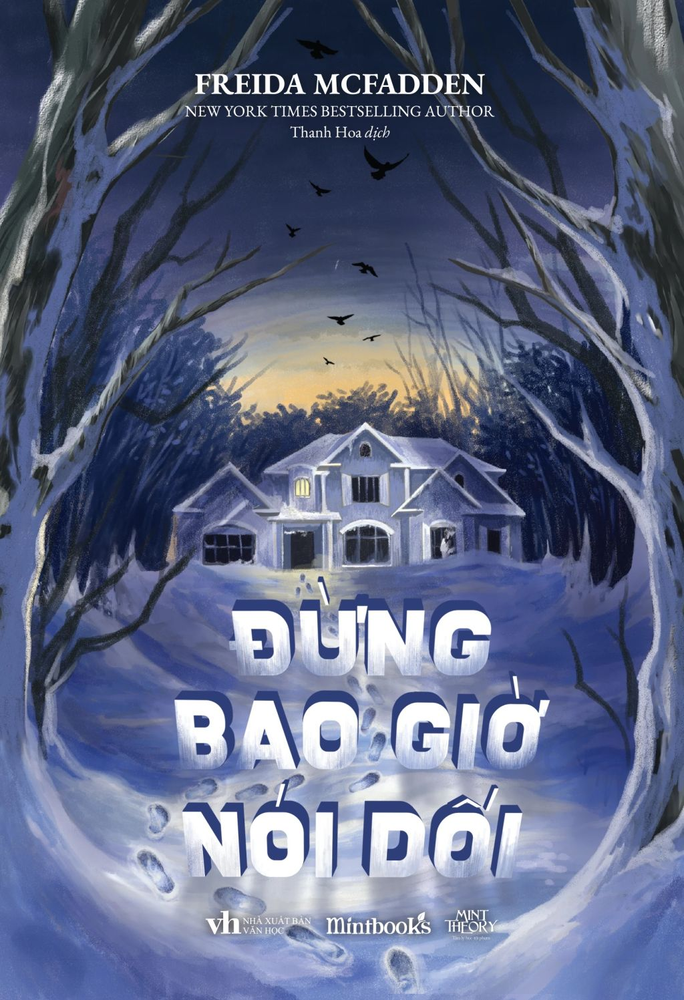

REVIEW SÁCH
Đừng bao giờ nói dối
Nhận xét của mình
Đây cũng không phải trinh thám có yếu tố điều tra mà nó mang hơi hướng kinh dị. Cuốn này kể về hai cặp vợ chồng sắp cưới (hoặc mới cưới mình không nhớ rõ) đang đi xem một căn nhà - là một căn nhà không ai ở, trước đó là nhà của một vị bác sĩ tâm lý nhưng vài năm trước cô ấy đã mất tích, thì họ bị mắc kẹt ở đó vì bão tuyết, họ đành phải ở đó cho đến khi có người tới giúp. Nhưng càng ở đó, cô vợ càng thấy những điều kì lạ xuất hiện trong một “căn nhà không ai ở”. Và tiếp sau đó là những khám phá của cô vợ khi đang tá túc tạm trong ngôi nhà đó. Cuốn này mình cũng không tài nào đoán nổi plot twist nhưng có lẽ mình không thấy sốc lắm, và đây cũng là một cuốn không có yếu tố trinh thám nên có lẽ không phải gu mình. Nhưng nó vẫn mang lại cảm giác lạnh sống lưng vì sự kì quái của căn nhà. Bạn nào thích kiểu kinh dị đáng sợ có thể tham khảo nha.
🛍️ Tìm mua cuốn sách
Bạn có thể tham khảo giá tại các nhà sách online: